懷念人物
故友李重威
作者黃和平親愛的阿威（李重威）：
妳離開我們已經快要三十年了（阿威離世那年43歲），回想過去，恍如昨日，人生短暫，知己難求，至今沒有任何人可以取代妳在我們心中的位置。 民國五十七年，我們這群剛剛踏入大學窄門的新鮮人，在適應新環境的同時，也結識了不少志氣相投的好朋友，像是李重威，羅靜春、辜英齡，林台珍，蔡錦麗王玲和我，後來同學們給我們取了一個好聽的稱號， 叫做「七仙女」。 七仙女形影相隨，在校上、下課時，就連上洗手間，換教室，也都排成一行，引人側目。現在想想實在不應如此招搖過市。阿威一直都很體貼，陪伴及照顧人，只要我們有事相託，總是有求必應。
在校期間，雖然朝夕相伴，在畢業後，卻各奔東西。尢其我在國泰航空上班，嚴格遵守輪班制，更是難得約定見面時間。其他同學也各自初出社會前往謀職，再加上各自有了羅曼史，忙碌得實在無暇顧及與七仙女同學們間的約會了。 畢業後值一提的是當大家忙著各種金融特考，有次考區在溝子口，阿威家就在附近，王玲説：「當時阿威好心的邀請同學們去她家吃餃子，一方面怕附近的餐廳不夠多，再者怕大家吃外食容易吃壞肚子。」真是非常貼心的讓大家記憶猶新呢。
我於1975年結婚時，特別邀請阿威作我的女嬪相，她欣然同意。事前的採購禮服，及婚禮現場的換裝、補妝，全仗著阿威的提醒及協助。連我弟弟（他那天是男儐相）都羨慕我怎麼有這麼一個好同學啊！ 我婚後也極為關注她的羅曼史，可惜的是不太順遂，她的男友是一位新聞記者工作者，阿威的父母非常不滿意他的記者身份，所以極不贊成二人交往。 但是數年來兩人感情一直非常深厚，且相互深愛著對方，立塲堅定。想必她先生一定有諸多優點，也值得阿威不肯放棄他。 某年某月的某一天，阿威終於不顧一切的遠赴臺南結婚，當時蔡錦麗成為她女方的唯一親人。
婚後她雖然沒有得到娘家人的祝福，倒是在台北和先生過得甜蜜幸福。但是阿威的母親在傳統市場中滑了一跤，髖關節骨折，需要置換人工關節，不幸在手術過程中因為心臟病發而過世，這也成為阿威心中永久的遺憾。 後來，阿威接連生了兩個女兒，她的先生因為工作時間的關係（傍晚上班，天亮才回家就寢），阿威在蠟燭兩頭燒的情況下，體力透支過度。不過在孫女降生後，阿威的父親也已原諒她，並承認了她的婚姻，阿威後來也接她的老父親同住，克盡孝道。 記得她有次在電話中告知，她在有一次過馬路時，忽然摸到脖子上有一個硬塊，檢查後才知道是喉癌，已經是末期，治癒的希望不大。她曾經提及她的飲食習慣是愛飲熱湯及熱食，再加上愛吃醃漬食品，有可能造成罹癌的主因。
當她在生病期間也不願意讓父親擔心，所以，每次去醫院治療時也只敢告訴父親是出差。知道她患病後，我和王玲曾經去她家中探望過，那時她人已經很虛弱，她婆婆特別從台南趕來照顧她及兩個稚齢女𠒇，兩個女兒天真是可愛，看了令人鼻酸。 阿威過世後，後來我也出國赴加拿大移民，鮮少獲知有六仙女的消息。
直到兩年前，靜春回台灣極想見見阿威的兩個女兒，並且想得知她們的近況，藉由辜英齡聯絡上阿威的大哥，並約見了阿威大女兒（小女兒那天沒有空）大女𠒇已經結婚生女（孫女大約5，6歲）小女兒也已經大學畢業在作事了。 據最近與蔡錦麗連絡時表示，當時阿威勇敢追求幸福，孤身一人赴臺南結婚，為了愛情真是偉大。事後也足她真的太值得了。自她辭世後，她先生迄今一直未婚。阿威婆婆説：「她老公一直深愛著阿威，所以不會再婚了。」阿威能有丈夫如此真心相待，也就不枉此生了。
他老公姜鎮邦先生未退休前（他曾經是中國時報社會組主任，後來是中國時報安全室協理）兩個女兒都託付給媽媽照顧，退休後他自己照顧，現在有了小外孫女，還常常接送小孫女上下學呢！阿威若泉下有知，一定可以安心了。 我在蒐集阿威訊息時，特別打電話向七仙女們打探消息，特別受到蔡錦麗、羅靜春、王玲等的協助，特別是在台南的錦麗提供了阿威的珍貴愛情故事。非常開心很樂意為阿威寫這篇專文，紀念她一生的真、善、美。 在此向她先生（姜鎮邦）致上最大的敬意。為他倆真摯的愛情永駐，敬致祝福。
照片集
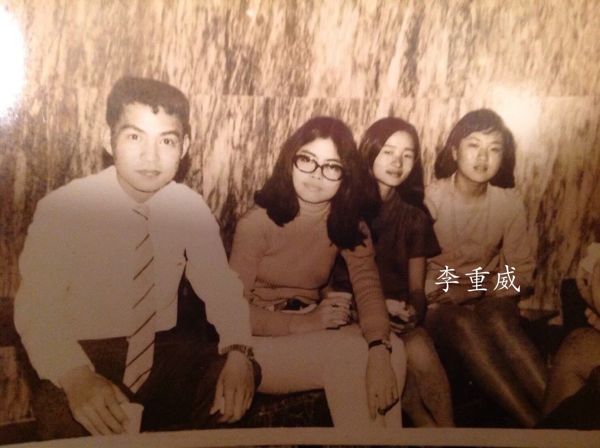 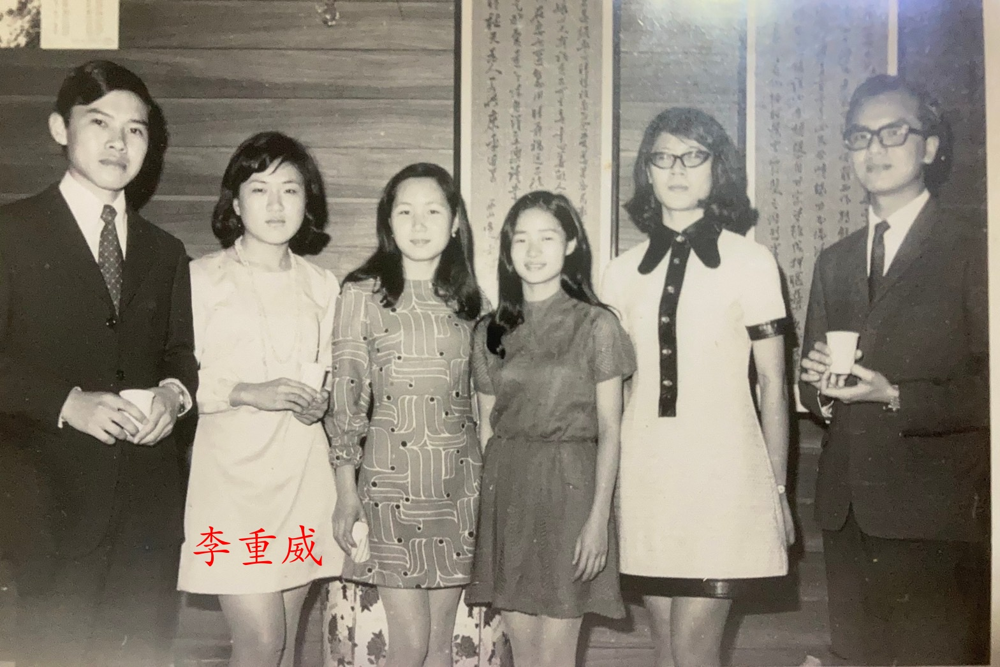 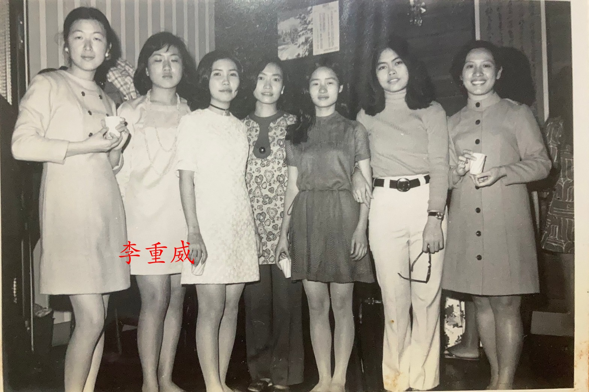 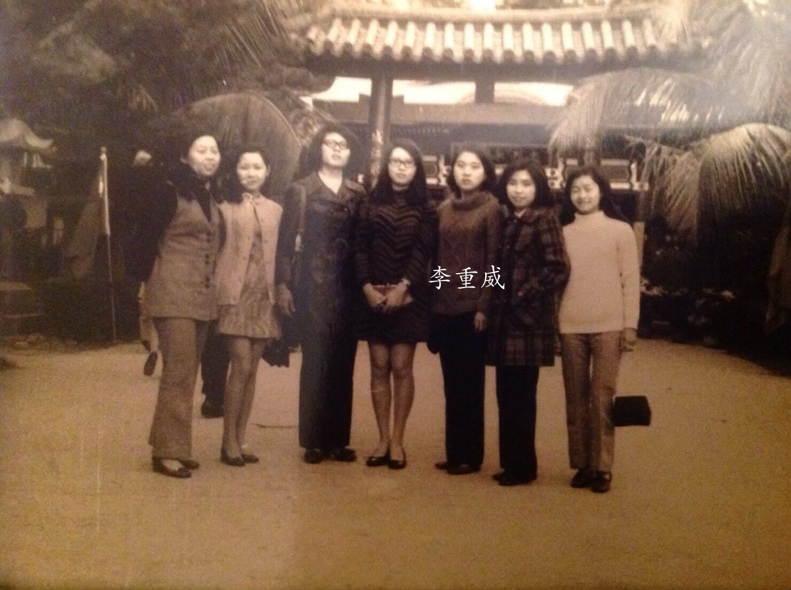 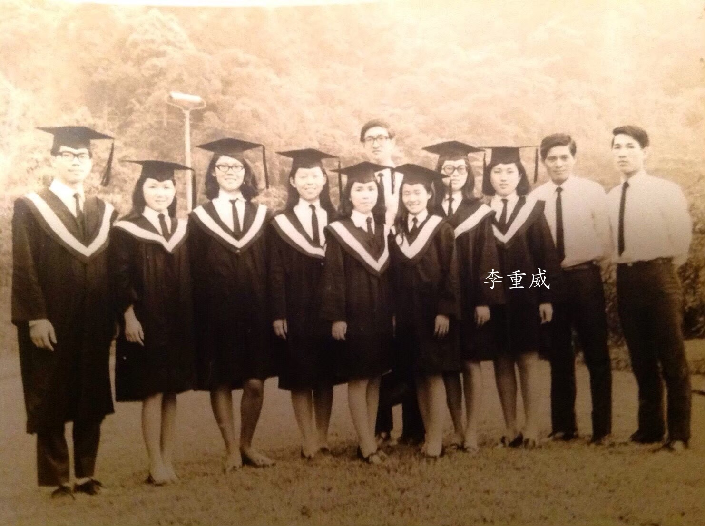 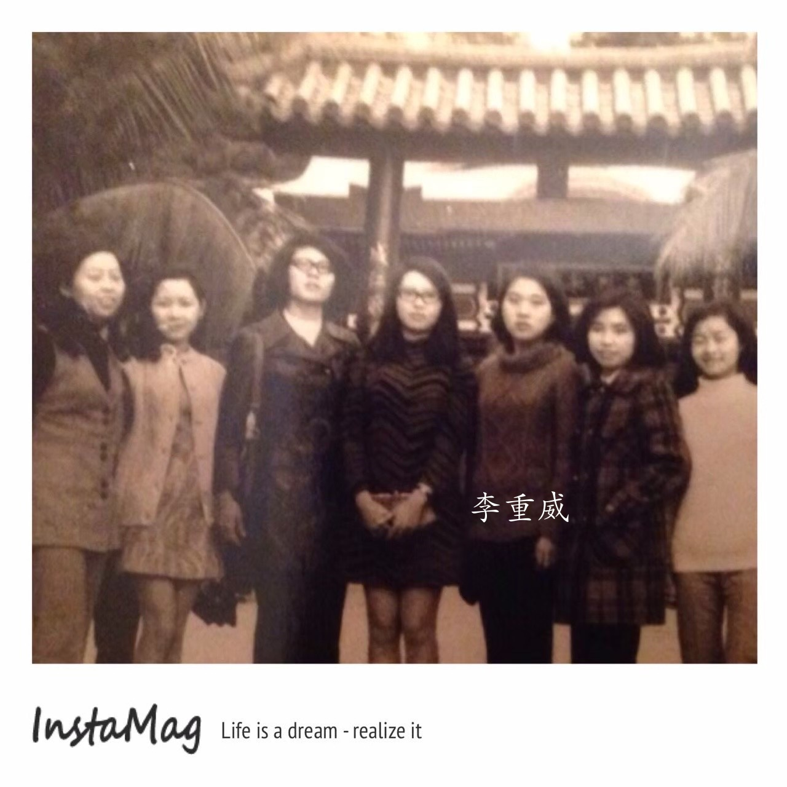致愛妻王怡人
孫全玉與王怡人—本班班對怡人因胰臟癌不幸於2004年8月16日病逝。享年56歲。
致愛妻王怡人
怡人本名文友。民國三十八年出生於台灣新竹。幼年因父親工作遷調，輾轉居住淡水、台中、嘉義等處。嘉義市大同國校畢業後，考進臺灣省立嘉義女中初中部。 據眾親友描述，怡人自童蒙起，即恬靜少言，聰慧異常，學業成績名列前茅。民國五十三年榮獲免試直升嘉義女中高中部，其數學解題能力特強，對生物科學興趣濃厚，因眼睛視力欠佳，故選讀「社會組」。民國五十六年榮獲免試保送國立政治大學銀行學系。
是年夏，余至該系註冊，學號四十三，見登記簿左鄰四十四號怡人芳名，心中微動，蓋以余名末字與怡人芳名末字合為「玉人一對」。 開學親睹斯人，愛慕之心無可遏抑，怡人時年十八，純樸憨直，對余之表白，初則憤怒峻拒，經再三懇求，始獲立談機會。於當時政大新聞館左側路邊，對面傾談三小時，終於得睹其笑嫣，是即緣起之日。
怡人讀書，注意重點，務求透徹瞭解，且過目成誦，余每笑其為「押寶」；余為防教授出題冷僻，每至期中期末兩試，輒必細讀所有考試範圍，熬夜緊張，狼狽不堪。怡人從不熬夜，亦不言分數高低，惟余每落其後。怡人類此提綱挈領之處事原則，當時已可見端倪。
怡人所受庭訓甚嚴，言行保守有節。大學一、二年級住學校宿舍，衣著用度均簡，冬夜圖書館關門後，偶或相偕吃麵，即頗為愜意；每月間於某一週末，搭公車至市區一名為「同發」之小麵館享用水餃麵條。看場電影後回校，視為無上樂趣。
猶憶某年秋大雨成災，夜讀結束送怡人回宿舍，地上積水僅及腳踝，待轉身回男舍途中，水已淹至胸前，種種驚險，於今思之，仍有餘悸。大三後，怡人因父親退休舉家搬至台北，不再住校。余每天下課則陪同怡人從政大搭公車至其光復南路寓所，再返回政大居停，以迄畢業。車上或談生活瑣事，或靜坐無言，當時所謂浪漫，不過儘量爭取時間相聚而已。
民國六十一年怡人考進台灣省合作金庫，同時併獲多家公營事業機構錄取，詢余意見，經告以銀行系畢業自以進銀行服務為宜。怡人遂從合作金庫營業部辦事員做起，歷經延平、永和、南勢角、南京東路、忠孝、國外部等單位，業務經驗涵蓋出納、各類存款、匯款、代收、會計、徵信、授信與外匯等，循序升遷至擔任中山支庫副理，兩年後因自我要求標準太高，壓力叢集，損及健康，請調國外部。
怡人對每一項工作，均敬謹從事，唯恐出錯，亦不願因本身欠熟練而影響全單位效率，故始終戮力以赴，不敢懈怠。猶憶怡人辦理支票存款業務期間，自忖視力欠佳，對提回交換票據之金額、背書、簽章等要件，加意審核，其專注程度，甚至要求余每日不得於該等時段去電，以免分心。服務支庫期間，幾乎每日加班，鮮少回家晚餐。迄本年五月一日病倒住院前，未嘗離開工作崗位，凡三十三年。其獲頒一等服務獎章並曾膺選優秀員工，可謂實至名歸。
怡人自幼即獨自承歡雙親膝前，成年成家後，週日猶奉老父至教堂，並義務幫教堂整理財務收支；或陪母親上市場提菜籃。迄病倒前，晨昏定省，從無虛日，其奉命唯謹、先意承旨之典型，已難見於今日。
與余完婚後，極獲先父母之歡心與信任，視其如女。當時先父母郵寄余處之書函，信封均僅以怡人為收件人，內容亦以怡人為討論對象，寵逾常格。此外，怡人待本家諸兄嫂與姪輩，以及余家叔伯妯娌，皆以幽默言語引大家開心。與同事相處，既無機鋒，又肯吃虧，常為他人設想，兼以聲音甜美，文字秀麗，人多樂與親近。平素少娛樂，因諳日語且哈日，曾相偕數度前往日本自助旅遊，為其最快樂時光。
怡人與余結褵三十年，相識幾四十年。余年輕時躁進疏狂，怡人每多規勸責難，使余少受跌撞之苦；成家時上無片瓦，怡人不嫌，與余同甘。最初貸款於板橋購公寓，其地距公車站牌徒步需三十分鐘，怡人每日跋涉上下班，毫無怨言。數年後，換購遷至永和，再數年復換購遷至台北，另增購對面房屋迎養高堂，一應買賣房屋暨搬家事宜，余或奉派海外，或出差外埠，未能參與，均係怡人一手經辦。至於兩女教養暨雙方家庭酬酢，亦均賴怡人操持。
怡人對我之恩情，豈「賢內助」一詞所能概括。猶憶當年兩人首次觀賞電影，其中對白有「若每日抬頭能見汝，即為幸福」，奉為座右，兩人日必就所遇問題或見聞相互討論，心意相通，總以為此景即可長久。
數年前怡人罹患憂鬱，余百計不得解其病。惟每日怡人推門進屋，余必含笑迎之，怡人謂笑容為余優點之一，來世仍願與余結為夫妻。其後余奉派長駐紐約，怡人日必與余通話兩次，娓娓瑣事，款款深情，其間三度來美小住，身體已有不適跡象，惟多年醫藥，初不料其為重症。待遵醫囑住院，怡人明知病況並受折磨，猶從容交代諸事，其堅強與豁達，適增床側諸人之心傷。 如今不復聆叮嚀聲，頓感徬徨無依。每見白髮高堂，獨坐愀然；瑛萱二女，未有歸宿，衷心酸楚不能自已。怡人有靈，必將有以助我！
孫全玉撰
照片集
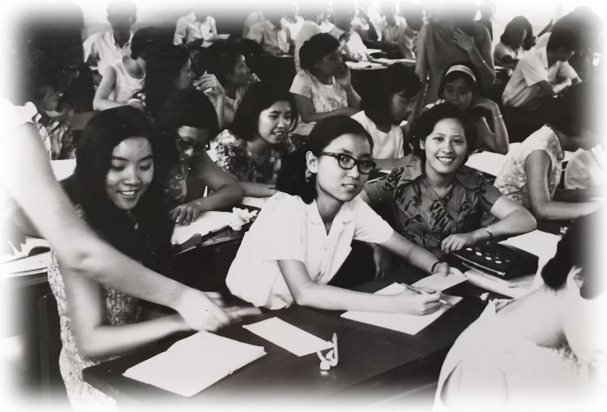 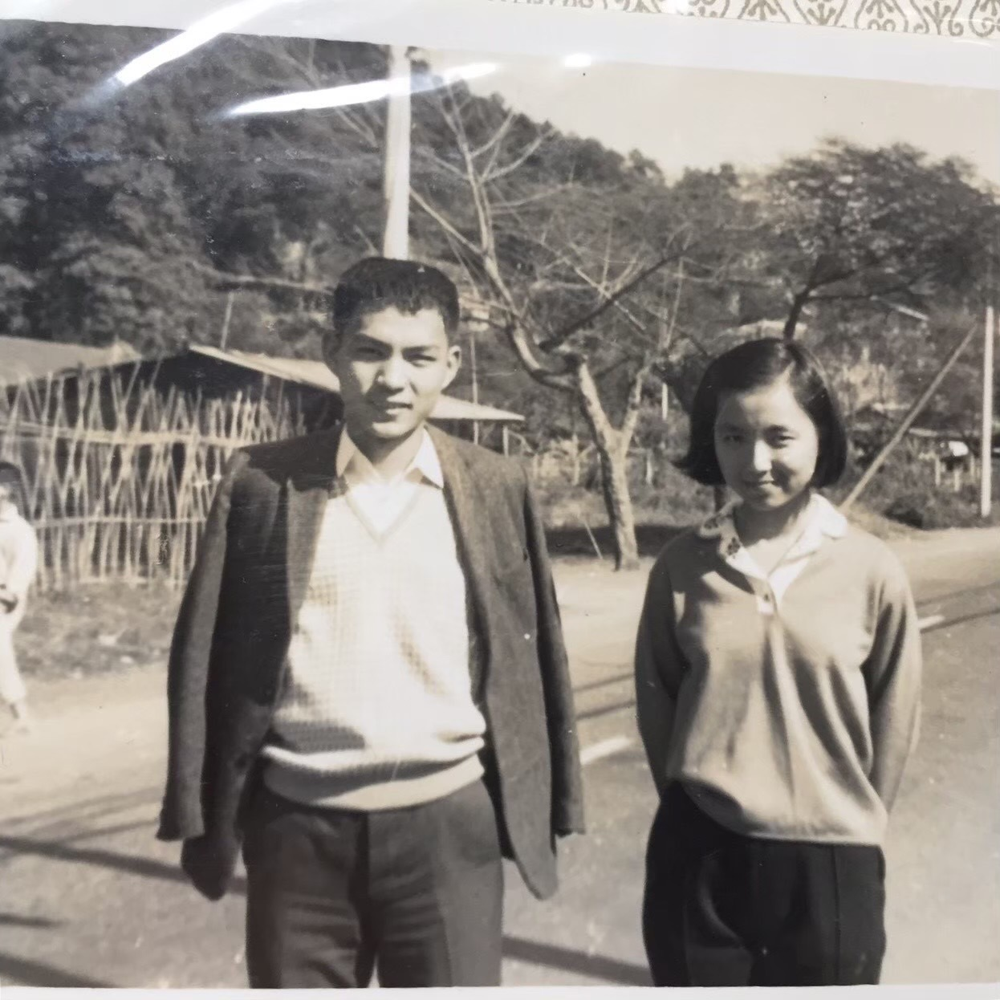 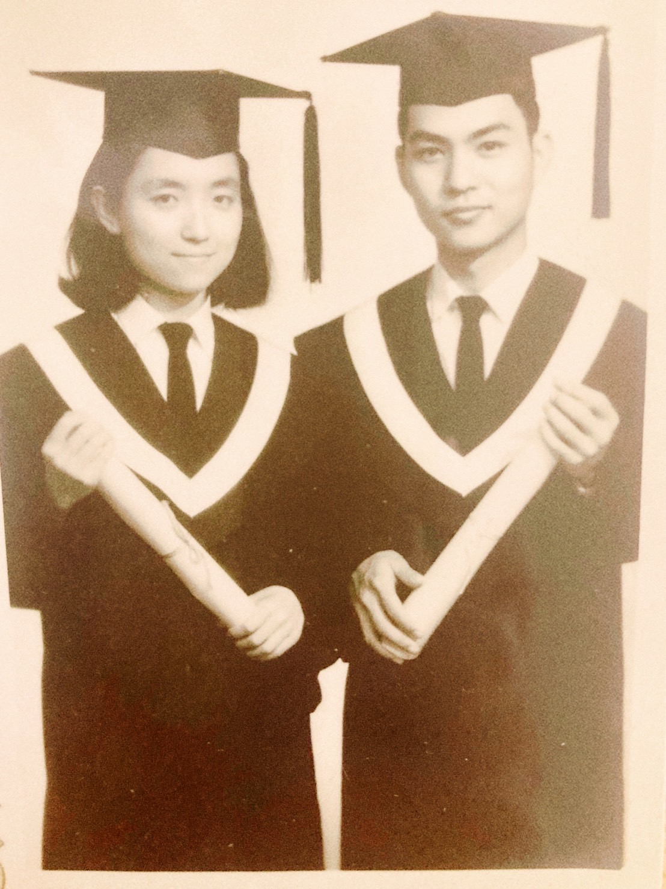
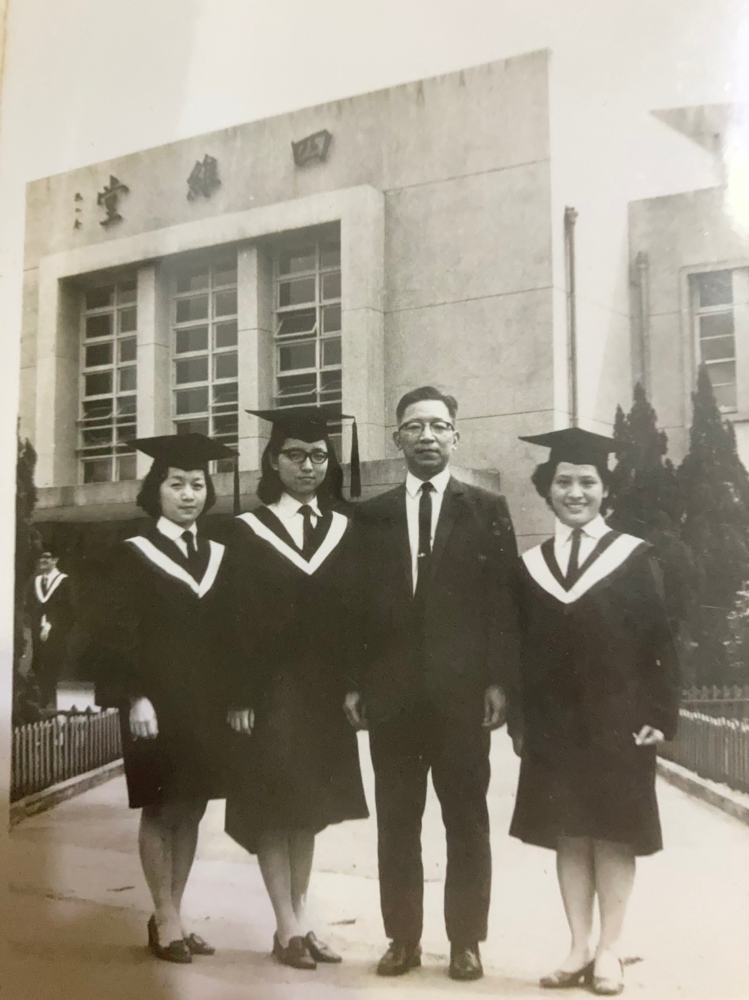
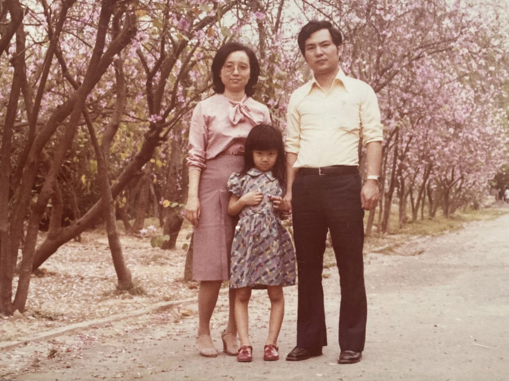
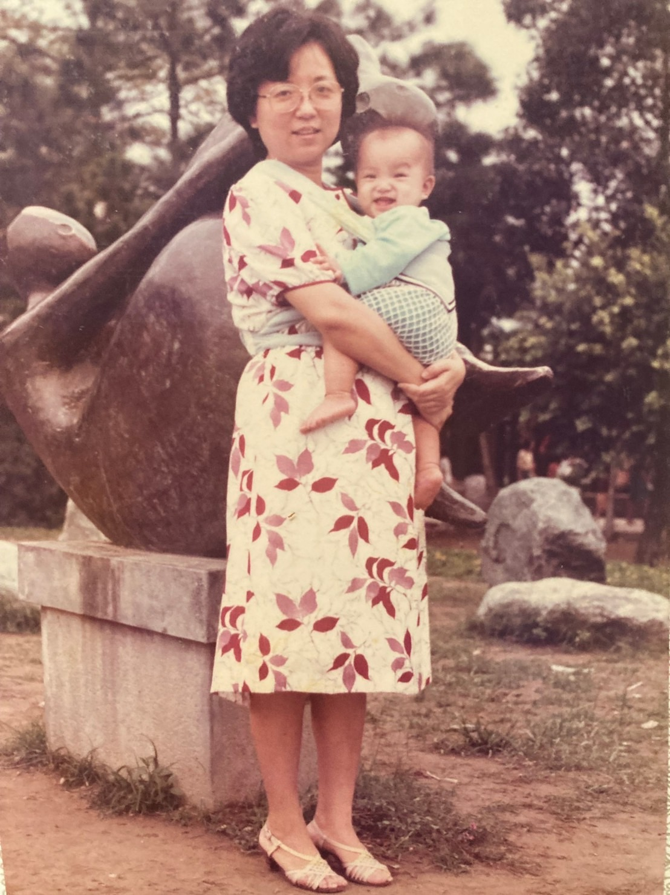
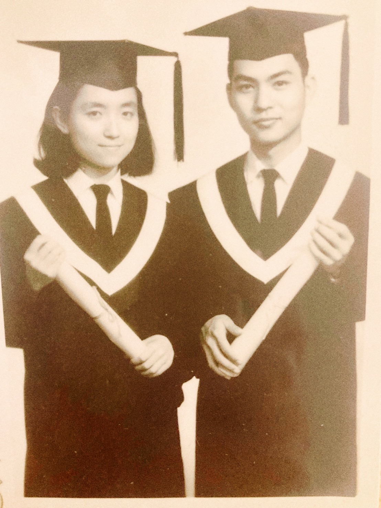
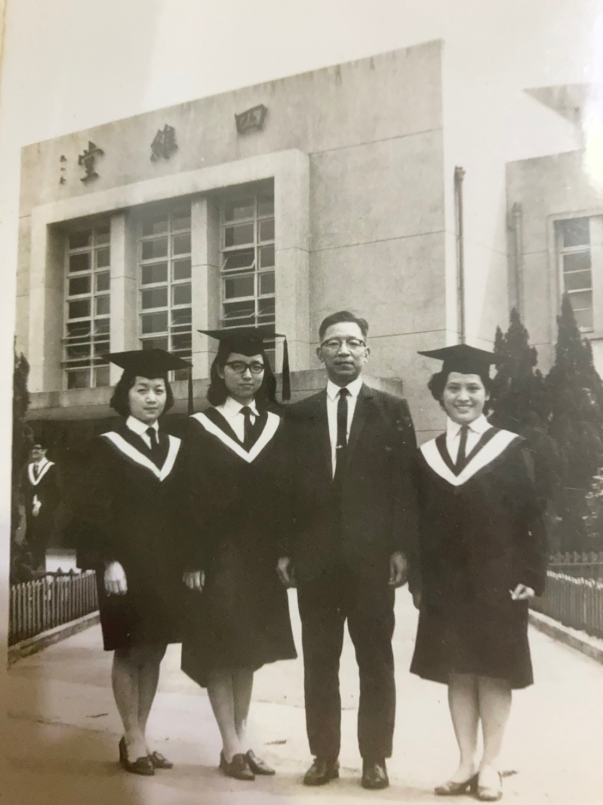
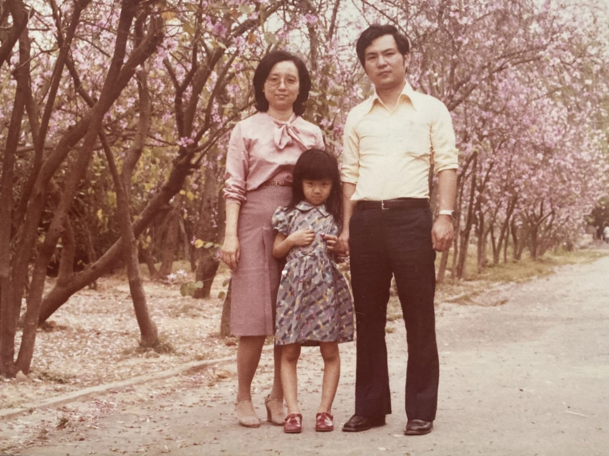
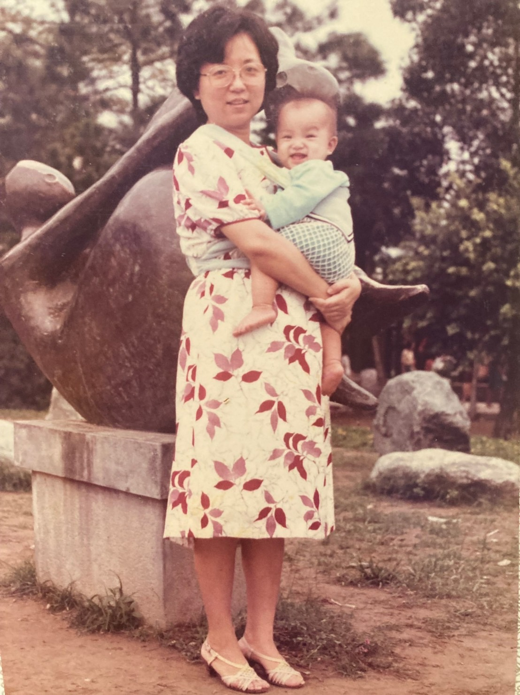